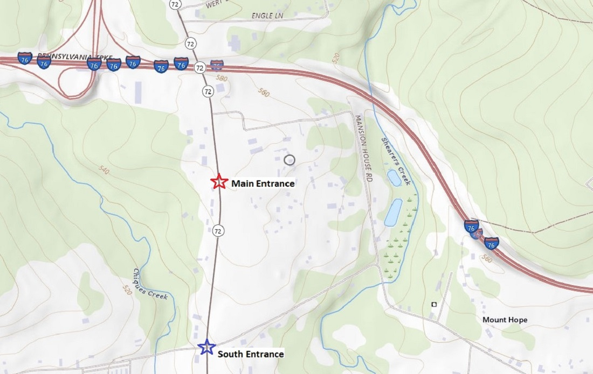

Directions
The Pennsylvania Renaissance Faire is located on the grounds of Mount Hope Estate & Winery at 2775 Lebanon Road in Manheim, Pennsylvania. Whether you're coming from the North or South, the Faire is easily accessible via major highways. Reference the guide below to plan your route and choose the best entrance for your trip.
Faire Entrances

Driving Directions
Main Entrance (PA-72): Take the PA Turnpike to Exit 266 and head south on Lebanon Road for a quarter mile. Turn east onto the Main Entrance drive.
South Entrance (Mountain Road): Continue south on PA Route 72 past the Main Entrance for half a mile and turn east onto Mountain Road to reach the South Entrance.
Parking Info & Recommendations
Free general parking is available on-site in the grass fields that surround the Faire grounds. Incoming traffic will be directed by attendants. Accessible parking spaces are located near the main entrance (please see driving directions for main entrance above).
Because parking opens at 9:30am, with peak parking traffic around 10:00am, it is recommended to arrive 30 to 45 minutes early to allow comfortable time to enter the Faire grounds.
Explore the Grounds
You can view the full grounds map here to prepare for your trip. Enjoy!